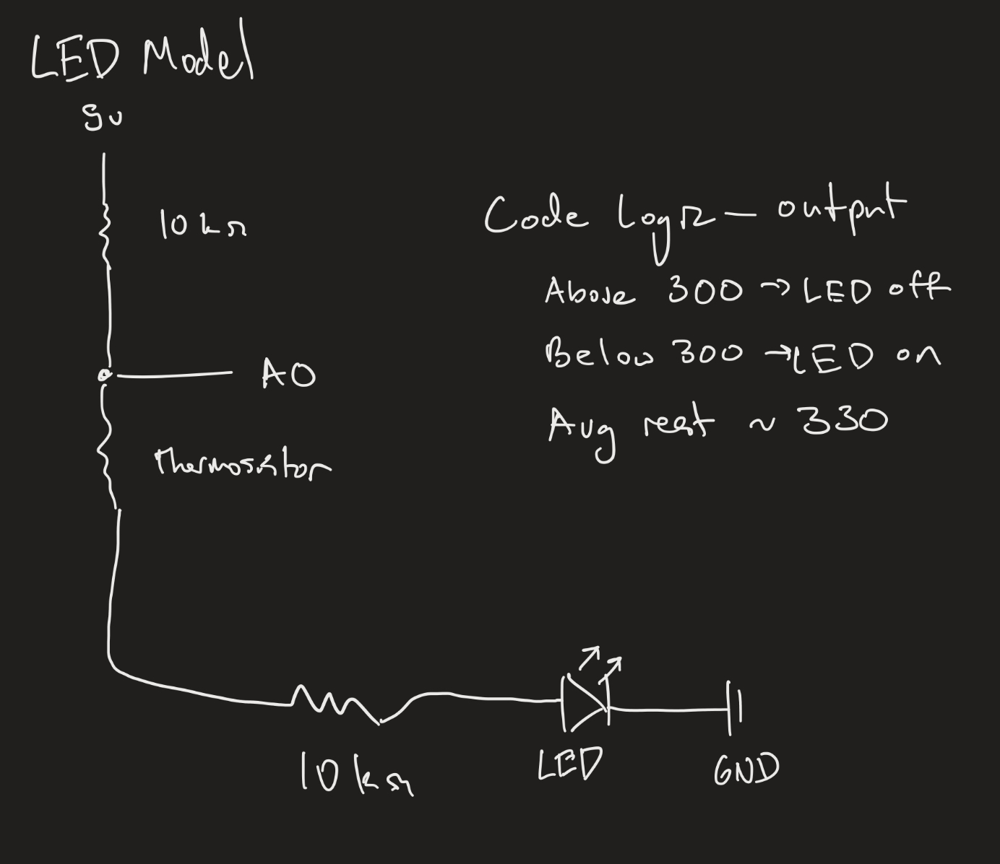
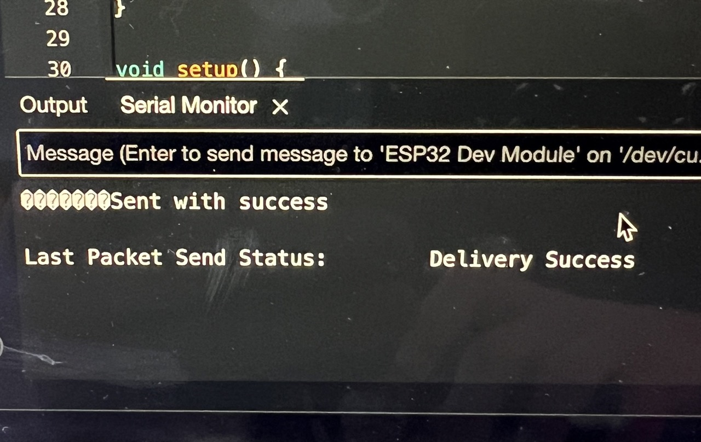
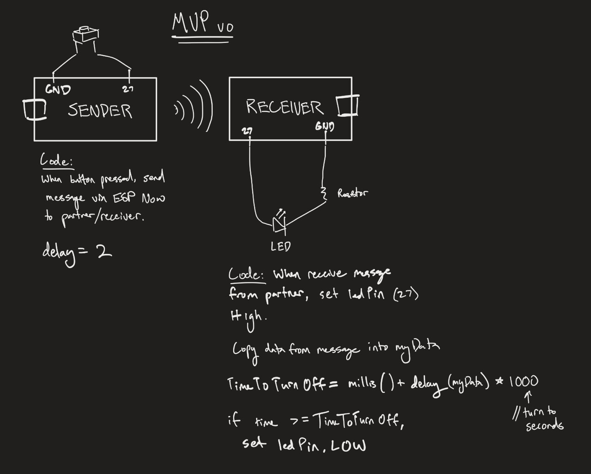
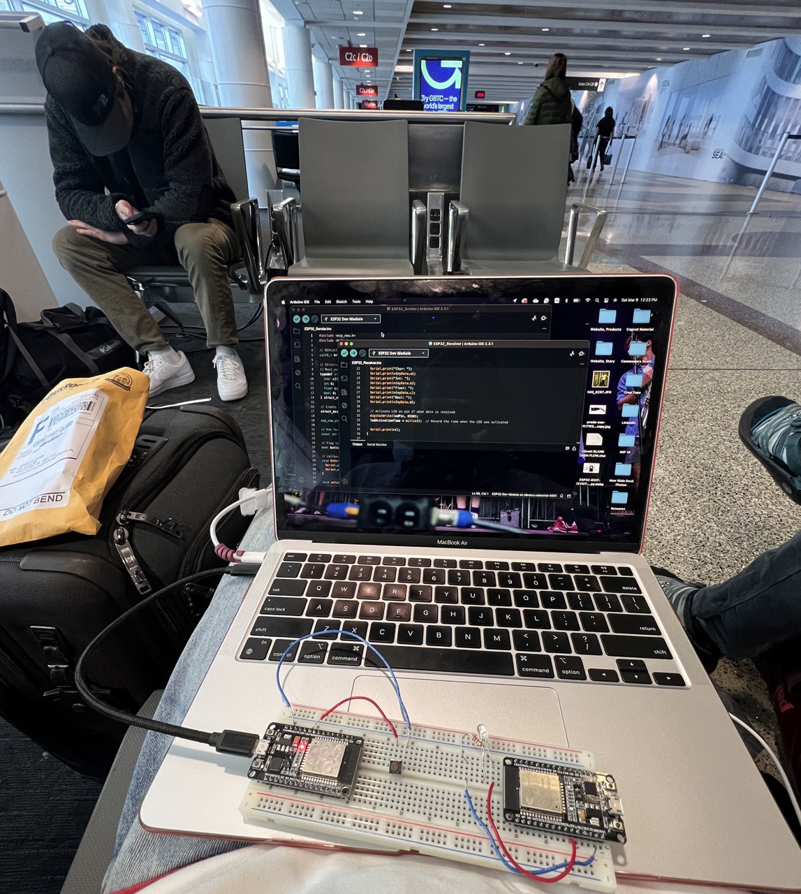
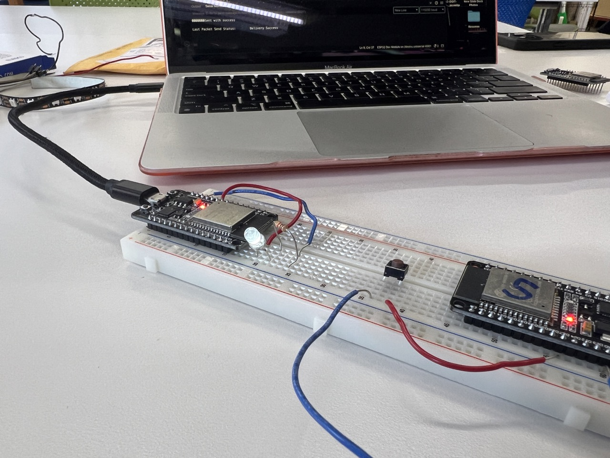

<div class="textcontainer">
<p class="margin"> </p>
<h3>Week 6: Electronic Inputs</h3>
<h3>Assignment: Build a Capacitive Sensor</h3>
</p>
For this project, used a thermosistor to make a circuit that could read my body temperature. I assumed the mechanisms behind the thermometers that detected my fevers when I was a kid were simple, but I wanted to find out for sure.
<p class="margin"> </p>
<div class="flexrow">
<img src="./temp.gif" width = 500 alt="thermosistor experiment with LED">
</div>
<p class="margin"> </p>
<p class="caption">I built a temperature detector to approxmiate how thermometers detect fevers.</p>
This taught me how to process and tune an arbitrary input to control an output. The physical quantity being measured was temperature, which was increasing due to heat from my fingers. The output was a number between 0 and 1023 and this was inversely proportional to the rising heat. I used the serial monitor to gague the mode and range of these values, which hovered around 330 at rest and dropped to 279 after I touching the sensor for a few seconds. I tuned the LED to turn on when the value dropped below 300 and turn off above 300.
<p class="margin"> </p>
<div class="flexrow">

</div>
<p class="caption">Schematic</p>
<p class="margin"> </p>
<p class="margin"> </p>
<h4> Calibration</h4>
<p class="margin"> </p>
I measured the temperature in the room to be 70 degrees Farenheight and found my body temperature to be 98.5 degrees. Since the graph stabilized at 270 after being held firmly for a few seconds, I gathered that 270 represented my body temperature while the resting value of 350 represented 70 degrees.
<p class="margin"> </p>
Sensor output:temperature has an inverse relationship with a slope of -2.8.
<p class="margin"> </p>
I tuned the code according to the line's equation (−2.7368x+550.8789) so that the output would represent temperature. I also coded the light to turn on when the sensor reached body temperature.
<p class="margin"> </p>
<div style = "width:100%">
<h4>Final Code</h4>
<div style = "background-color: #d3d3d3; height: 50vh; overflow: scroll;">
<pre><code>
const int sensorPin = A0;
const int ledPin = 5;
int sensorValue = 0;
unsigned long previousMillis = 0;
const long interval = 500;
void setup() {
Serial.begin(9600);
pinMode(ledPin, OUTPUT);
}
void loop() {
unsigned long currentMillis = millis();
if (currentMillis - previousMillis >= interval) {
previousMillis = currentMillis;
sensorValue = analogRead(sensorPin);
float transformedValue = (sensorValue - 550.8789) / -2.7368;
Serial.println(transformedValue);
if (transformedValue > 98) {
digitalWrite(ledPin, HIGH);
} else {
digitalWrite(ledPin, LOW);
}
}
}
</code></pre>
</div>
</div>
<p class="margin"> </p>
<h3>Assignment 2: Build a device using another sensor</h3>
<h4>Wireless ESP32 remote</h4>
<p class="margin"> </p>
I got a head start on my final project by connecting two ESP32s wirelessly via ESP Now. That is the simplified version. It took 2 weeks of trail and error, 1 fried ESP32, and a close call at airport security to get this "simple" circuit working.
<p class="margin"> </p>
<p class="margin"> </p>
<div class="flexrow">

</div>
<p class="caption">First signs of life</p>
<p class="margin"> </p>
<p class="margin"> </p>
<div class="flexrow">

</div>
<p class="caption">Basic Schematic</p>
<p class="margin"> </p>
I worked on this for hours in class, in lab, and I even took it to California over break. Boston Logan security was not thrilled to see my gizmo pass through the X-Ray. Thankfully, I still had the Elegoo branded packaging and explained it was for a school project.
<p class="margin"> </p>
<div class="flexrow">

</div>
<p class="caption">Exposed wires + Airport = not a good idea</p>
<p class="margin"> </p>
After returning to school defeated, I dove back into the basics and broke the code down piece by piece. I replaced one of the ESP32s, experimented for another 2 hours. With lots of help from Bobby, my LED lit up!
<html lang="en">
<head>
<meta charset="UTF-8">
<meta name="viewport" content="width=device-width, initial-scale=1.0">
<title>Side-by-Side Image Array</title>
<style>
table {
border-collapse: collapse;
background-color: #FFFFFF; /* Set the background color of the table to white */
margin: 20px auto; /* Center the table horizontally */
}
td {
padding: 0px; /* Add some padding around each image */
}
img {
max-width: 100%; /* Make sure images don't exceed the width of their container */
height: auto; /* Maintain the aspect ratio of the images */
}
</style>
</head>
<body>
<table>
<tr>
<td></td>
<td></td>
</tr>
</table>
<p class="caption">First wireless light activation (left) and my reaction after 2 weeks of work (right).</p>
</body>
</html>
<p class="margin"> </p>
<div style = "width:100%">
<h4>Sender Code</h4>
<div style = "background-color: #d3d3d3; height: 50vh; overflow: scroll;">
<pre><code>
#include <esp_now.h>
#include <WiFi.h>
uint8_t broadcastAddress[] = {0x08, 0xD1, 0xF9, 0x38, 0x16, 0x74};
// Structure example to send data
// Must match the receiver structure
typedef struct struct_message {
int delay;
} struct_message;
// Create a struct_message called myData
struct_message myData;
esp_now_peer_info_t peerInfo;
const int buttonPin = 27; // Assuming the button is connected to GPIO 2
bool buttonPressed = false;
// callback when data is sent
void OnDataSent(const uint8_t *mac_addr, esp_now_send_status_t status) {
Serial.print("\r\nLast Packet Send Status:\t");
Serial.println(status == ESP_NOW_SEND_SUCCESS ? "Delivery Success" : "Delivery Fail");
}
void setup() {
// Init Serial Monitor
Serial.begin(115200);
// Set device as a Wi-Fi Station
WiFi.mode(WIFI_STA);
// Init ESP-NOW
if (esp_now_init() != ESP_OK) {
Serial.println("Error initializing ESP-NOW");
return;
}
// Once ESPNow is successfully Init, we will register for Send CB to
// get the status of Transmitted packet
esp_now_register_send_cb(OnDataSent);
// Register peer
memcpy(peerInfo.peer_addr, broadcastAddress, 6);
peerInfo.channel = 0;
peerInfo.encrypt = false;
// Add peer
if (esp_now_add_peer(&peerInfo) != ESP_OK){
Serial.println("Failed to add peer");
return;
}
// Set up the button pin
pinMode(buttonPin, INPUT_PULLUP);
}
void loop() {
// Check if the button is pressed
if (digitalRead(buttonPin) == LOW && !buttonPressed) {
// Set values to send
myData.delay = 2;
// Send message via ESP-NOW
esp_err_t result = esp_now_send(broadcastAddress, (uint8_t *) &myData, sizeof(myData));
if (result == ESP_OK) {
Serial.println("Sent with success");
}
else {
Serial.println("Error sending the data");
}
// Set buttonPressed to true to prevent further messages until the button is released and pressed again
buttonPressed = true;
}
// Check if the button is released
else if (digitalRead(buttonPin) == HIGH && buttonPressed) {
// Reset buttonPressed to false so that a message can be sent again when the button is pressed
buttonPressed = false;
}
// Delay before checking the button state again
}
</code></pre>
</div>
</div>
<p class="margin"> </p>
<div style = "width:100%">
<h4>Receiver Code</h4>
<div style = "background-color: #d3d3d3; height: 50vh; overflow: scroll;">
<pre><code>
#include <esp_now.h>
#include <WiFi.h>
// Structure example to receive data
// Must match the sender structure
typedef struct struct_message {
int delay;
} struct_message;
// Create a struct_message called myData
struct_message myData;
const int ledPin = 27;
unsigned long timeToTurnOff = 0;
// callback function that will be executed when data is received
void OnDataRecv(const uint8_t * mac, const uint8_t *incomingData, int len) {
memcpy(&myData, incomingData, sizeof(myData));
digitalWrite(ledPin, HIGH);
timeToTurnOff = millis() + myData.delay * 1000;
}
void setup() {
pinMode(ledPin, OUTPUT);
// Initialize Serial Monitor
Serial.begin(115200);
// Set device as a Wi-Fi Station
WiFi.mode(WIFI_STA);
// Init ESP-NOW
if (esp_now_init() != ESP_OK) {
Serial.println("Error initializing ESP-NOW");
return;
}
// Once ESPNow is successfully Init, we will register for recv CB to
// get recv packer info
esp_now_register_recv_cb(OnDataRecv);
}
void loop() {
if (millis() >= timeToTurnOff){
digitalWrite(ledPin, LOW);
}
}
</code></pre>
</div>
</div>
</div>